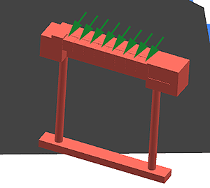
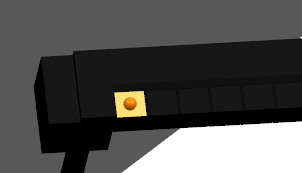
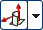
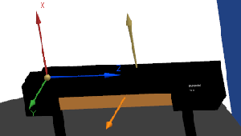
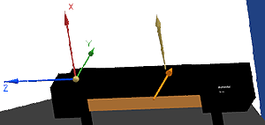

Define the tool pocket mount junction
In this activity, you will define your first tool pocket junction. This junction will position the tool in the pocket and serve as the tool mount junction for the probe head.
-
In the graphics window, zoom in on the tool rack so that the pockets are visible when highlighted.

-
In the Machine Tool Navigator, right-click TOOL_RACK and choose Insert→Machine Component.
-
In the Create Machine Component dialog box, click Specify CSYS
 .
.
-
In the CSYS dialog box, from the Type list, choose X-axis, Y-axis, Origin.
-
In the Origin Point section, click Point Dialog .
-
In the Point dialog box, from the Type list, choose Point on Face.
-
In the graphics window, on the tool rack, click the top plane at the center of the first pocket, and in the Point dialog box, click OK.

-
In the CSYS dialog box, in the X-axis and Y-axis sections, select Face/Plane Normal .
-
In the X-axis section, select Specify Vector, and in the graphics window, click the top face of the tool rack.

-
In the Y-axis section, select Specify Vector, and in the graphics window, click a front face on the tool rack.

-
In the Y-axis section, click Reverse Direction
 so that the Y-axis points in the opposite direction, and then click OK.
so that the Y-axis points in the opposite direction, and then click OK.

The probe head will now correctly align with the tool in the pocket.
-
In the Create Machine Component dialog box, in the Junctions section, in the Name box, type T1 and press Tab.
The pocket’s head mount junction is now defined. Leave the Create Machine Component dialog box open for the next activity.